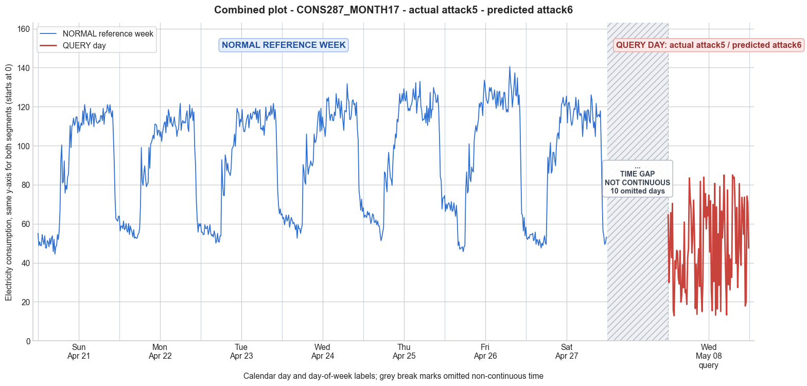

CONS287_MONTH17 · actual attack5 · predicted attack6
- Pair
- CONS287_MONTH17
- GT
- attack5
- Prediction
- attack6
- Binary GT
- attacked
- Binary Prediction
- attacked
- Source
- E010
- Parse
- stored
- Date
- 2013-05-08
- Weekday
- Wednesday
- Latency
- 1.14 min
- Tokens
- 7758

Final output
Classification: - Manipulated Identified Attack: - Most Likely: Attack 6 - Confidence: High - Reasoning: The query day exhibits a sharp upper bound at exactly 85.0, with multiple readings clustered near this value (e.g., 85.00, 84.97, 83.88, 83.83, 83.48). The corresponding normal day (reference Day 3) has peak values up to 131.69, indicating that the attacker selected a cut‑off point around 85 and replaced all higher consumption readings with that limit. This signature clipping is unique to Attack 6. Attack 1 (constant scaling) was ruled out because the query‑day values do not scale uniformly from the normal profile—e.g., early morning readings fluctuate in a different proportion, and the presence of a hard ceiling is inconsistent with simple multiplication. Attack 7 (subtract cut‑off, floor at zero) was ruled out because the query day contains no zero values and retains a non‑zero floor above 12.9, whereas Attack 7 would produce many zeros if the cut‑off were set high enough to halve the mean. Attack_Behavior_Explanation: - How consumption values are manipulated relative to the normal week: A cut‑off threshold (approximately 85.0) was randomly selected. Every 15‑minute reading that originally exceeded this limit was replaced with the cut‑off value itself. Readings below the threshold were left unchanged or only slightly altered. This creates a profile where all high‑consumption peaks are flattened to the same maximum, while lower levels remain variable. - Impact on magnitude and trend: Both overall magnitude and trend are altered. The total daily energy is reduced (mean drops from ~95.4 to ~48.2), and the typical diurnal peak shape is truncated. The consumption profile loses its natural high‑usage spikes, compressing the range and weakening the correlation with normal behavior. - Possible technical causes: This attack is typically enabled by false data injection—the attacker manipulates the meter’s reported readings so that no interval exceeds the chosen cut‑off, possibly to evade detection by simple threshold‑based monitoring without eliminating the consumption signal entirely.
Prompt
You are a domain expert in smart grid security and electricity theft analysis, with deep knowledge of non-technical loss (NTL) attack patterns in smart meters. You are given: 1. A plot of one week of original (normal) energy consumption for a smart meter, provided as context for the customer's typical consumption behavior. 2. A plot of one day of energy consumption for the same smart meter, which may or may not be manipulated. Below are common attack types, each defined by how consumption values are altered, their impact on magnitude and trend, and their possible technical causes. Attack 0: Generated by replacing all electricity consumption samples with zero values for the entire observation duration. Simulates a scenario where no energy usage is reported at all. May be caused by a total meter bypass or severe meter malfunction. Completely eliminates both the trend and magnitude of the consumption profile. Attack 1: Multiplies the actual energy consumption by a constant random value between (0,1). The lower the factor, the higher the severity. Can be triggered by meter bypass, magnetic interference, reverse current, and false data injection. The consumption trend remains the same but the magnitude is uniformly reduced. Attack 2: Generated by replacing consumption samples with zeros for a random duration. Also known as an on-off attack. Can be caused by full meter bypass, false data injection, and reverse current. Changes both the trend and amplitude. Attack 3: The actual consumption is multiplied by different random factors between 0 and 1, with a unique factor per sample. Similar to Attack 1 but the scaling factor varies per reading. Caused by meter bypass, magnetic interference, and reverse current. Changes both the trend and amplitude. Attack 4: Simulates energy theft over a randomly selected period within the observation window. All measurements in that period are reduced. Caused by meter bypass, magnetic interference, reverse current, and false data injection. Changes both the trend and amplitude. Attack 5: Each sample is replaced by a false value obtained by multiplying the average normal consumption by a random variable between 0 and 1, with a different variable per sample. Caused by false data injection. Produces a completely different pattern from the original consumption profile, changing both trend and magnitude. Attack 6: A random cut-off point is selected and all consumption values above it are replaced by that cut-off value. The attacker avoids exceeding a predefined maximum limit. Mainly caused by false data injection. Changes both the trend and amplitude. Attack 7: A random cut-off point is subtracted from each sample; if the result is negative, zero is reported. Similar to Attack 6 but replaces exceeding values with zero instead of the cut-off point. May be caused by false data injection or total meter bypass. Does not change the trend but reduces overall consumption. Attack 9: All samples are replaced by the average daily energy consumption, resulting in a flat constant profile. Easily detectable because constant consumption does not reflect normal customer behavior. Caused by false data injection. Eliminates all trends. Attack 10: Reverses the consumption pattern without reducing the total amount. Applicable when the electricity company uses time-varying pricing, allowing the attacker to shift high consumption to off-peak periods. Caused by false data injection. Changes the trend without decreasing total consumption. Attack 12: The attacker replaces their consumption pattern with that of a lower-consuming user. The legitimate user unknowingly pays the adversary's electricity bill. Caused by false data injection. Attack IEEE: For each 15-minute interval across the entire day, the consumer either reports the actual electricity consumption or substitutes it with zero. The result is a profile where some intervals reflect real consumption while others are zeroed out, creating an irregular pattern across the full day. May be caused by false data injection. Changes both the trend and amplitude. Given the two plots, determine: 1. Whether the day is attacked or original - compare the flagged day against the normal week and assess whether the consumption pattern is consistent with normal behavior or shows signs of manipulation. If the day is consistent with the customer's typical consumption behavior, classify it as original and provide no further analysis. If manipulation is detected, proceed to point 2. 2. Which attack type this most likely is - identify the single most probable attack and justify your choice based on how the flagged day deviates from the normal week. 3. The behavior of the identified attack - explain how the consumption values are manipulated, their impact on magnitude and trend, and the possible technical causes behind this type of attack. Output Format: Classification: - Original | Manipulated Identified Attack: (fill only if manipulated) - Most Likely: Attack X - Confidence: High | Medium | Low - Reasoning: Why it matches Attack X and why Attack Y and Attack Z were ruled out (list top 2 alternatives considered) Attack_Behavior_Explanation: (fill only if manipulated) - How consumption values are manipulated relative to the normal week - Impact on magnitude and trend - Possible technical causes
Reasoning content
We are asked to determine whether the query day is original or manipulated, and if manipulated, identify the attack type and explain the behavior. We have no plots but have numeric readings and statistics. From the metadata: The reference week consists of 7 days (Day 0 to Day 6) with 96 readings per day (15-min intervals). The query day is also day of the week? Actually, the query day has DAY_ID=3, which corresponds to Wednesday (since Day 3 in the reference week had dow=2, meaning Tuesday? Wait, check: dow=0 is Monday? The problem says "dow=0..6 Mon-Sun", so dow=0 is Monday, dow=1 Tuesday, dow=2 Wednesday, etc. In the reference week: Day 0: dow=6 (Sunday), Day 1: dow=0 (Monday), Day 2: dow=1 (Tuesday), Day 3: dow=2 (Wednesday), Day 4: dow=3 (Thursday), Day 5: dow=4 (Friday), Day 6: dow=5 (Saturday). The query day has dow=2, so it's Wednesday, just like Day 3 in the reference week. Also, query day cal_month=5, while reference week is April (cal_month=4). So it's a different week, but same day of week. The statistics: reference Day 3 mean=95.44, min=52.59, max=131.69, std=24.90. Query day mean=48.16, min=12.90, max=85.00, std=22.01. So the query day has significantly lower consumption: mean nearly halved, min much lower, max also lower (85 vs 131.69). This suggests a reduction. But is it consistent with normal variation? The reference week days show some variation: Day 3 mean 95.44, Day 4 mean 98.24, Day 5 mean 99.42, Day 6 mean 92.35. So the query day's mean of 48.16 is far outside the typical range. The min of 12.90 is also extremely low compared to any reference day min (lowest min in reference week is 44.46 on Day 0). So it's clearly manipulated. Now we need to identify the type of attack. Let's examine the query day consumption pattern. We have the numeric array for the query day (96 values). We should compare it to Day 3 of reference week (since same weekday), but also consider the overall week. Attack types: 0: all zeros. Query day is not all zeros; there are values up to 85. 1: multiply by constant factor between 0 and 1. The factor would be roughly 48.16/95.44 = 0.504. Check if the pattern scales? We can compute correlation between query day and reference Day 3 after scaling by 0.504. If it's a constant scaling, the shape should be similar. Let's examine some high-magnitude parts: reference Day 3 had peaks around 130, 124, etc. Query day max is 85. If scaled by 0.5, reference peaks would become ~65, but query day has peaks of 85, so not constant scaling. 2: on-off attack: replace some samples with zeros for random duration. Query day has many low values but not many zeros? The min is 12.90, no zeros. Actually, the values: 12.90, 15.75, etc. So zeros are not present. So not attack 2. 3: multiply by different factors per sample. Could be. 4: random period reduction. Could be. 5: replace with false values from average normal consumption * random(0,1). The pattern would be completely different, random around some low value. The query day pattern still shows a daily cycle: low at night, higher during day? Let's look: the first few hours: 64.66, 29.86, 47.50, 65.69, 42.67, 70.40, 15.75, 12.90... hmm, it's erratic. Later there are higher values around 80s. It does not appear purely random like a flat constant times random. There is some structure. 6: cut-off above a certain threshold. Look at max 85.0. In reference Day 3, max is 131.69. If they set cut-off at 85, values above 85 would be replaced by 85. The query day max is exactly 85.0. And there are several readings of 85.0? Check the list: "... 85.00, 83.48, 83.83, ..." yes 85.00 appears. Also other high values: 84.97, 83.88, 83.47, etc. So it seems many values are capped at around 85. This is indicative of attack 6: "A random cut-off point is selected and all consumption values above it are replaced by that cut-off value." The max is 85 exactly, and many values cluster just below that, suggesting that the original higher values were replaced by 85. In attack 7, if they subtract a cut-off and replace negatives with zero, we'd see zeros, not a cap. So attack 6 is likely. 7: subtract cut-off, replace negative with zero. This would not produce a cap; it would reduce but not flatten peaks to exactly the same value. It could produce many zeros if the cut-off is high enough. But we have no zeros. So not 7. 9: all samples replaced by average, so flat. Not flat; std=22. 10: reverse pattern. This would not reduce total consumption, but the query day total is much lower. So unlikely. 12: replace with a lower-consuming user's pattern. This could produce a different shape but also a lower mean. But attack 6 seems more specific with the cap at 85. Attack IEEE: intermittently zero out intervals. No zeros here. So attack 6 is most likely: a cut-off point is set (around 85) and all values above it are replaced by 85.0. This explains why the max is exactly 85 and many values are near 85. Let's verify by comparing reference Day 3: it had peaks of 131.69, 126.68, 124.17, etc. If the attacker set cut-off at 85, all those would become 85.0. The query day has several 85.0 and surrounding values like 84.97, 83.88, etc. Possibly the original values were reduced to 85, and nearby values may have been slightly adjusted or left as-is. The attack definition: "A random cut-off point is selected and all consumption values above it are replaced by that cut-off value." So yes. Let's also rule out other attacks: Attack 1 (constant scaling): Not constant because the ratio of query to reference Day 3 is not uniform. For example, reference Day 3 early morning: 65.10, 62.60, 63.22, 59.47,... query day early: 64.66, 29.86, 47.50, 65.69,... Not a simple scaling. Attack 3 (sample-specific scaling): possible but the presence of a clear cap makes attack 6 more specific. Attack 3 would typically produce a varied pattern without a hard ceiling. Attack 4 (random period reduction): could have a period of normal and a period reduced. But the cap at 85 across multiple high intervals suggests a systematic cutoff, not a time-based period. Attack 5 (completely random from average): Not random; the pattern retains some shape. Attack 2: no zeros. So confidence is high for attack 6. Now explain the behavior: Attack 6: a cut-off point (around 85) was chosen, any consumption above it was replaced by that value. This reduces both magnitude and trend, as peaks are clipped. The technical cause is false data injection. Output format: Classification: Manipulated. Identified Attack: Most Likely: Attack 6, Confidence: High. Reasoning: mention the max capped at 85.0, many values near 85, reference day had peaks up to 131, so cutoff is evident. Why not Attack 1 (ratio not constant), Attack 7 (no zeros). Attack_Behavior_Explanation: describe. I'll now craft the answer.